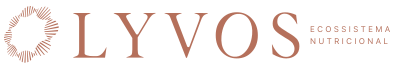

Sistemas resolvem prescrição. Ecossistemas resolvem o negócio. Mas o que separa um ecossistema de uma ferramenta cara não é só a tecnologia — é quem está dentro dele. A LYVOS foi construída para nutricionistas que operam em outro nível. E esses nutricionistas, quando juntos, constroem algo que nenhum sistema isolado consegue entregar: referência coletiva, padrão de mercado, comunidade de prática.
Você não entra numa plataforma. Você entra num movimento.
O nutricionista brasileiro trabalha sozinho. Agenda sozinho, prescreve sozinho, analisa exame sozinho, tenta crescer sozinho. O mercado de software reforçou esse isolamento: criou ferramentas individuais, vendidas por assinatura individual, com suporte individual. Cada nutricionista resolvendo os mesmos problemas de novo, do zero, sem se conectar com quem já resolveu.
Fragmentação de sistema e fragmentação de comunidade são o mesmo problema com duas faces.
O que o nutricionista típico enfrenta sozinho toda semana
A maioria resolve no escuro. Ou não resolve.
A gente não quer ser mais um. A gente quer de fato redefinir o jogo de como o nutricionista utiliza o ecossistema — e como ele se relaciona com outros nutricionistas dentro dele.
Daniel Coimbra · Cofundador · LYVOS Nutricionista e mentor com mais de uma década de atuação
A LYVOS é o único ecossistema nutricional que trata tecnologia e comunidade como a mesma coisa. Não como features separadas. Como lógica integrada — porque um nutricionista melhor com ferramenta melhor, dentro de uma comunidade que pratica no mesmo nível, cresce diferente de tudo que existe hoje.
O que o ecossistema entrega
Ecossistema sem comunidade é software. Comunidade sem ecossistema é grupo de WhatsApp. A LYVOS é as duas coisas ao mesmo tempo.
A gente entregaria algo que realmente ia entregar pro mercado o que não existia. Não era mais uma caderneta digital. Era uma outra forma de operar — e de se conectar com quem opera no mesmo nível.
Jakssuel Alves · Cofundador · LYVOS Nutricionista e arquiteto operacional do ecossistema
| O que comparam | Sistemas de dieta | LYVOS — Ecossistema + Comunidade |
|---|---|---|
| Lógica do produto | Ferramenta de prescrição isolada | Ecossistema clínico, operacional e comunitário |
| Análise de exames | Faixa de referência do laboratório | Quartil preditivo de otimização clínica |
| IA no produto | Botão de ChatGPT colado na interface | Governança multi-provider com arquitetura nativa |
| Comunidade | Inexistente — cada um resolve sozinho | Núcleo de Fundadores com acesso direto à equipe |
| Crescimento coletivo | Não considerado | Padrão de prática elevado por quem opera junto |
| Posicionamento | Consulta avulsa num mercado de preço | Programas de alto valor dentro de uma categoria nova |
Comunidade tem tamanho. As primeiras 45 vagas do Grupo de Fundadores não são apenas sobre onboarding de plataforma — são sobre quem vai compor o núcleo da LYVOS. Quem define o padrão. Quem molda o produto. Quem entra com as condições que não voltam.
Quando a LYVOS abrir para o mercado geral, o preço muda. A condição muda. O acesso à equipe muda. O que não muda é que os Fundadores já estão dentro — com vantagem de ferramenta, de posicionamento e de comunidade construída antes de todo mundo.
Condição de Fundador inclui acesso prioritário à migração completa · condições comerciais travadas · onboarding white-glove com a equipe técnica · entrada no núcleo fundador da comunidade LYVOS
Fazer o cara ficar bom, ser bom, ter uma entrega diferenciada. É isso que a LYVOS faz. E quando esses caras estão juntos, o nível do mercado sobe junto.
Jakssuel Alves · Cofundador · LYVOS
O mercado de nutrição vai se dividir. De um lado, os nutricionistas que continuam resolvendo os mesmos problemas com as mesmas ferramentas fragmentadas, sozinhos. Do outro, os que entraram num ecossistema real — com tecnologia, com método e com uma comunidade que opera no mesmo nível.
O FalaNutri, dia 29, é onde essa divisão começa. Preencha abaixo para garantir sua vaga no Grupo VIP de Fundadores.
Tu não vai ser substituído pela IA. Tu vai usar a IA para ficar muito mais forte — e vais crescer junto com outros nutricionistas que entenderam isso antes do mercado.
Daniel Coimbra · Cofundador · LYVOS